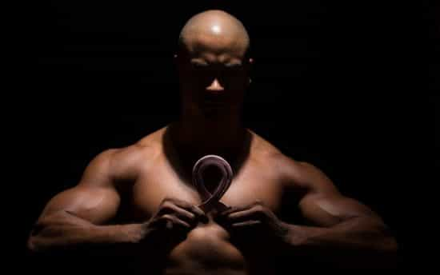

Seventy-six men were brought into a lab in pairs and instructed to compete for the attention of an attractive female confederate. As it turned out, the men’s testosterone levels directly tied with their expression of dominant behavior and with how much the female confederate indicated that she “clicked” with each man.
Researchers from the study concluded:
These findings provide novel evidence linking T with evolutionarily adaptive behaviors in humans and suggest that T interacts with people’s explicit dominance motives to regulate behaviors that enhance mating success.
That’s all good and well, but we can’t extrapolate the results from this study because they observed the preferences of just one woman. To define the relationship between testosterone and attractiveness, we’ve got to dig deeper…
Testosterone and Facial Masculinity
Studies have found testosterone levels to directly correlate with perceived facial masculinity.
A square jawline, a chiseled face, and tight cheekbones – all signs of high T.
In this study, researchers constructed pairs of digital composites from the faces of men with high and low testosterone. These composites were then presented to subjects who were assigned the forced-choice task of assessing the masculinity of the pairs of photographs. Across the board, the photographs from the high testosterone composites were judged to be more masculine than the photographs from the low testosterone composites. The attractiveness of the faces, however, were open to interpretation.
Women assess a man’s attractiveness based on whether her goal is short-term or long-term mating. In this study, researchers tracked the possible facial cues in men’s faces that women use to assess attractiveness. Here’s what they concluded:
Men’s actual and perceived affinity for children predicted women’s long-term mate attractiveness judgments, while men’s testosterone and perceived masculinity predicted women’s short-term mate attractiveness judgments. These results suggest that women can detect facial cues of men’s hormone concentrations and affinity for children, and that women use perception of these cues to form mate attractiveness judgments.
In other words, when a woman’s goal is short-term mating she goes for the man with high testosterone. When her goal is long-term mating, she assesses how interested a man may care for infants.
And this leads us to the question…
How Would You Define An Attractive Man?
You might say that an attractive man is one who is strong, assertive, dominant, and sure of his path and purpose in life. I agree. But to break it down from an evolutionary standpoint, the traits we consider attractive are simply those that enhance our chances of survival and reproduction.
So the question to ask is:
What traits in a man would a woman seek out in order to enhance her own (and her offsprings) chances of survival and reproduction?
Confidence, strength, and decisiveness are definitely traits that factor in, but in his exhaustive 20-year cross-cultural analysis, Dr. David Gilmore makes the case that all masculine traits fall under the umbrella of three larger traits that embody what it means to man. These three traits, as Gilmore writes in his book Manhood In The Making, are 1) Protection, 2) Procreation, and 3) Provision. Let’s go over each of these “P’s” one at a time.
How Testosterone Factors In To The 3 P’s Of Masculinity
The 3 P’s of masculinity explore the big picture of what it means to be a man across all cultures. As you’ll see, testosterone is a major driver in the expression of each of them.
The first “P” is protection. As Dr. Gilmore writes in his book, the essence of protection comes down to the need to “establish and defend boundaries.” A man must be able to draw the line between safety and danger. If that line is crossed, he must have the ability to spur into action and defend his family and tribe against outside threats. It’s plainly obvious how testosterone factors into this – a man with low testosterone will not have the strength, endurance, or mental fortitude to deal with outside threats (if you’re wondering what defines an “optimal” T-level, check out my ultimate guide here).
The second “P” is procreation. This trait requires for a man to successfully pursue women and spread his seed. Testosterone is a biological determinant of this trait. Without optimal T-levels, a man lacks the potency and virility to actually “get it up” and sexually satisfy his woman.
The third “P” is provision. A masculine man provides the majority of resources – whether financial, emotional, spiritual, economic, etc. – for the sustenance of his family and tribe. Once again, you can see how testosterone factors in – without optimal testosterone production, a man will lack the motivation and drive to provide.
Conclusion
In essence, higher testosterone levels make a man more masculine – this point is undisputed. In general, women find masculine men more attractive. But in reality, it will vary on a case-to-case basis depending on whether a woman’s goal is short-term or long-term mating.
Interested in natural testosterone optimization? Check out my free quiz that will analyze your current situation and offer personalized advice moving forward.
Read More: 5 Myths About Testosterone That Seriously Need To Die